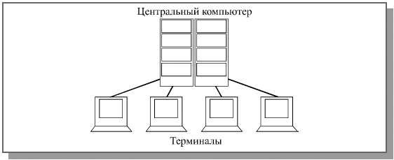
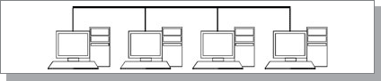
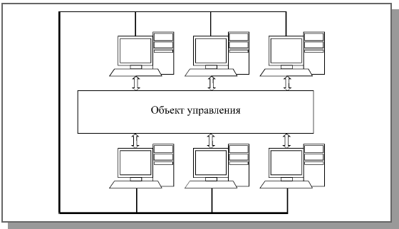

История компьютерных сетей
 Связь на небольшие расстояния в компьютерной технике существовала еще задолго до появления первых персональных компьютеров. К большим компьютерам (mainframes) присоединялись многочисленные терминалы (или “интеллектуальные дисплеи”). Правда, интеллекта в этих терминалах было очень мало, практически никакой обработки информации они не делали, и основная цель организации связи состояла в том, чтобы разделить интеллект (“машинное время”) большого мощного и дорогого компьютера между пользователями, работающими за этими терминалами. Это называлось режимом разделения времени, так как большой компьютер последовательно во времени решал задачи множества пользователей. В данном случае достигалось совместное использование самых дорогих в то время ресурсов – вычислительных.
Затем были созданы микропроцессоры и первые микрокомпьютеры. Появилась возможность разместить компьютер на столе у каждого пользователя, так как вычислительные, интеллектуальные ресурсы подешевели. Но зато все остальные ресурсы оставались еще довольно дорогими. А что значит голый интеллект без средств хранения информации и ее документирования? На помощь снова пришли средства связи. Объединив несколько микрокомпьютеров, можно было организовать совместное использование ими компьютерной периферии (магнитных дисков, магнитной ленты, принтеров). При этом вся обработка информации проводилась на месте, но ее результаты передавались на централизованные ресурсы. Здесь опять же совместно использовалось самое дорогое, что есть в системе, но уже совершенно по-новому.
 Затем появились персональные компьютеры, которые отличались от первых микрокомпьютеров тем, что имели полный комплект достаточно развитой для полностью автономной работы периферии: магнитные диски, принтеры, не говоря уже о более совершенных средствах интерфейса пользователя (мониторы, клавиатуры, мыши и т.д.). Казалось бы, зачем теперь соединять персональные компьютеры? Что им разделять, когда и так уже все разделено и находится на столе у каждого пользователя? Что же может дать сеть в этом случае?
 Самое главное — это опять же совместное использование ресурса. То самое обратное разделение времени, но уже на принципиально другом уровне. Здесь уже оно применяется не для снижения стоимости системы, а с целью более эффективного использования ресурсов имеющихся в распоряжении компьютеров. Например, сеть позволяет объединить объем дисков всех компьютеров, обеспечив доступ каждого из них к дискам всех остальных как к собственным. Но нагляднее всего преимущества сети проявляются в том случае, когда все пользователи активно работают с единой базой данных, запрашивая информацию из нее и занося в нее новую, например, в банке, в магазине, на складе (рис. 1.1.4). Никакими дискетами тут уже не обойдешься: пришлось бы целыми днями переносить данные с каждого компьютера на все остальные. А с сетью все очень просто: любые изменения данных, произведенные с любого компьютера, тут же становятся видными и доступными всем. В этом случае особой обработки на месте обычно не требуется и в принципе можно было бы обойтись более дешевыми терминалами, но персональные компьютеры имеют несравнимо более удобный интерфейс пользователя, облегчающий работу персонала. К тому же возможность сложной обработки информации на месте часто может заметно уменьшить объем передаваемых данных.
Без сети также невозможно обойтись в том случае, когда необходимо обеспечить согласованную работу нескольких компьютеров. Сеть позволяет синхронизировать действия компьютеров, распараллелить и соответственно ускорить процесс обработки данных, то есть сложить уже не только периферийные ресурсы, но и интеллектуальную мощь. Именно указанные преимущества локальных сетей и обеспечивают их популярность и все более широкое применение, несмотря на все неудобства, связанные с их установкой и эксплуатацией.